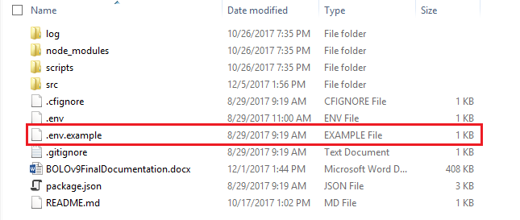
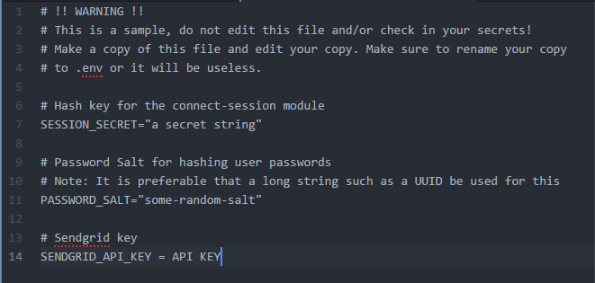
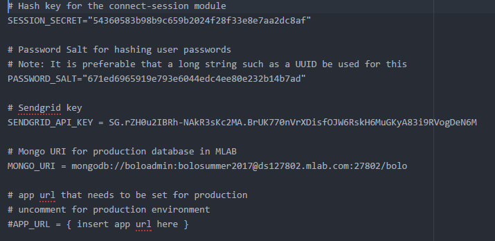
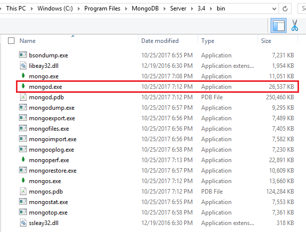
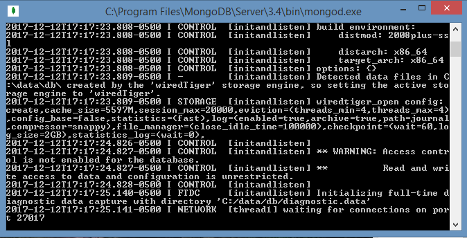
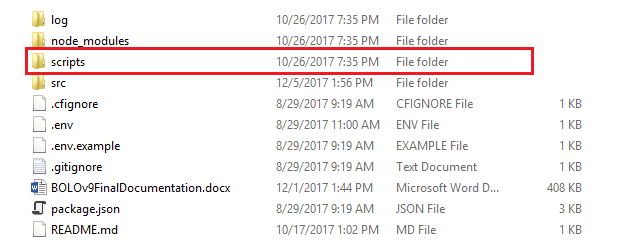
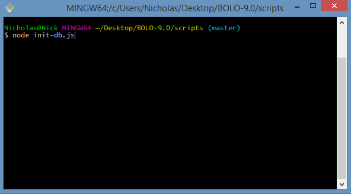
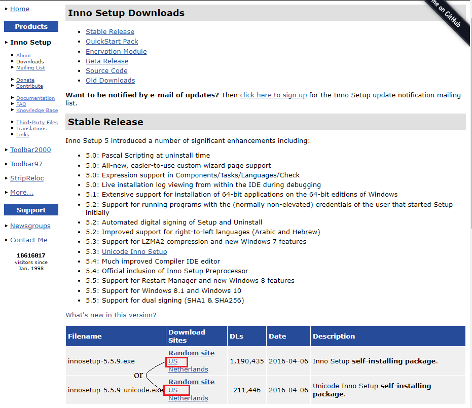
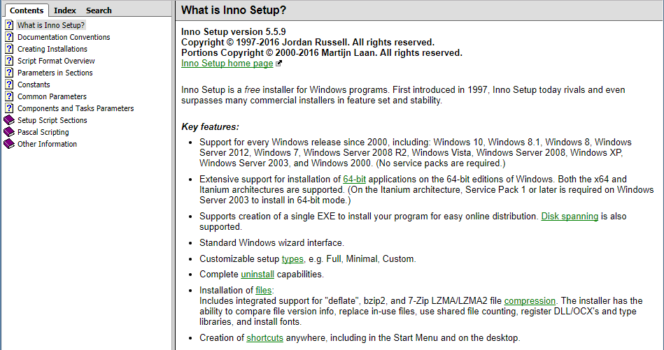

After using the BOLO Installation Package you should have all the necessary programs and depedencies. The only thing left to do is:
1. Update environment file:
There should be a ".env.example" file in your BOLO 9.0 folder (If not just create a file called ".env").

Open the file. Once the file is open it should appear like this:

Edit your ".env.example" file so it can look like this:

Most of the attributes in the file are not that important to look at, except for the SENDGRID KEY. You may have to change the key, since the Pinecrest Police Department is paying for it. You will probably have to go start a trial version of a Sendgrid account to get another key. Ask the project owner (Jason Cohen or Frank Alvarado) for help.
2. Initializing the database:
Go to your MongoDB directory in your Program Files(or wherever it is downloaded) and run "mongod.exe"


After that go to the "scripts" directory in your BOLO 9.0 folder and run a command shell inside the "scripts" folder. Once the command shell is open, run the command "node init-db.js"


Once that is done, you have successfully finish initializing your database
If you wish to do a manual installation:
You have to download two main programs, NodeJS and MongoDB. After you have those two programs installed, you can go get the source code of BOLO 9.0 from Github (which the senior project professor should give you access). Once you have the source code, direct yourself to the main directory of the code and open a command shell there. Then run the command "npm installs" to download all dependecies. Once these are done, you can continue from top to finally start running the application. If you wish to gain more help, you can look at past versions Installation Videos for help. Here is an example "https://youtu.be/rPFtNXbV6Jg/".
If you wish to edit the Installion Package you can download Inno Setup. You can find some help with the code here.

